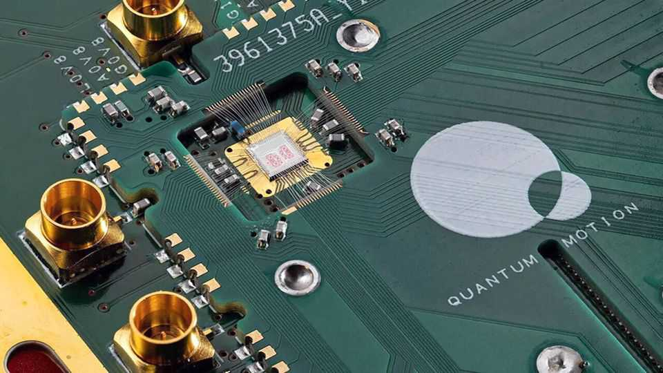

Britain’s super position in quantum technology
Some of the industry’s bets are already paying off

Nov 12th 2026
Quantum computing is a bit like the strange laws of physics it relies on: scary enough to give national-security wonks nightmares, yet still sufficiently puny for sceptics to dismiss. Perhaps no country wants it to work more than Britain. Three of the world’s top five quantum clusters are on its soil, reckons the European Centre for International Political Economy, a think-tank. On November 6th at a showcase in London, Sir Peter Knight, a pioneer in quantum technology, reiterated a goal to make a quantum computer that can outperform supercomputers in Britain by 2035. Yet even now other quantum technologies are proving their worth.
Mostly this is down to quantum sensing, which exploits the sensitivity of quantum systems to faint changes around them. Use cases in medicine have abounded for decades (MRI scanners, for instance); now they are multiplying. A spinout from the University of Nottingham, Cerca Magnetics, makes brain-scanning helmets fitted with quantum sensors that can detect subtle magnetic fields. It has made an operating profit in each of the past five years. Others are experimenting with diagnostic tools for breast cancer, and finger-prick tests for diseases such as hiv.
Another application for sensing is positioning, navigation and timing (PNT). Knowing where you are, where you are going and what time it is has always been useful for soldiers. The war in Ukraine, meanwhile, has shown how easy it is to jam satellite systems such as gpS. So the Royal Navy has been trialling quantum navigation with compact atomic clocks, which do not depend on signals from space.
Similar uses stretch beyond the battlefield. Britain’s latest national risk register identifies the loss of pnt, whether from technical failure or a cyber-attack, as a “significant” risk. It recommends that private firms keep “resilient backup systems”—such as atomic clocks. Days before the register was published, in July, a nationwide network outage in Australia demonstrated the potential for disruption. Faulty software from Telstra, the country’s biggest telecoms company, halted trains and payments and blocked some emergency calls. The British government’s budget in October included £138m ($185m) for quantum-sensing kit to be used for defence, health care and transport.
Useful as brain scanners and atomic clocks may be, they are merely heralds in the march of quantum tech. The highest hopes are pinned on quantum computers’ mathematical powers. Large-scale machines would be able to do some sums vastly faster than today’s supercomputers, transforming computational chemistry and materials science. Subodh Kulkarni, the boss of Rigetti, an American firm that operates in Britain, thinks that running quantum processors alongside the artificial-intelligence chips used today will make it quicker and cheaper to train large language models.
For now, quantum computers’ error rate is too high for them to be reliable. British startups are working to fix this: Riverlane is building error-correction systems, while Phasecraft is developing algorithms that can do useful work even on error-prone machines. Through ProQure, a £1bn procurement competition, the government is supporting promising firms and helping validate their prototypes.
The most advanced machines will in all likelihood be built in the “golden triangle” spanned by Cambridge, London and Oxford, home to hardware firms such as Quantum Motion and orca. Yet pleasingly for jam-spreading politicians, the industry extends far more widely around the country than that for AI. Glasgow is one of the world’s top quantum clusters. The quantum supply chain runs through Sheffield in the north of England all the way to Newport in south Wales.
Turning all this into a lasting lead will take more scale-up capital and infrastructure, says Sir Peter: “Every now and then, I wake up in the night thinking, ‘What happens if it doesn’t work?’” But over time he thinks the odds of that have fallen. “It’s going better than I’d hoped.” ■